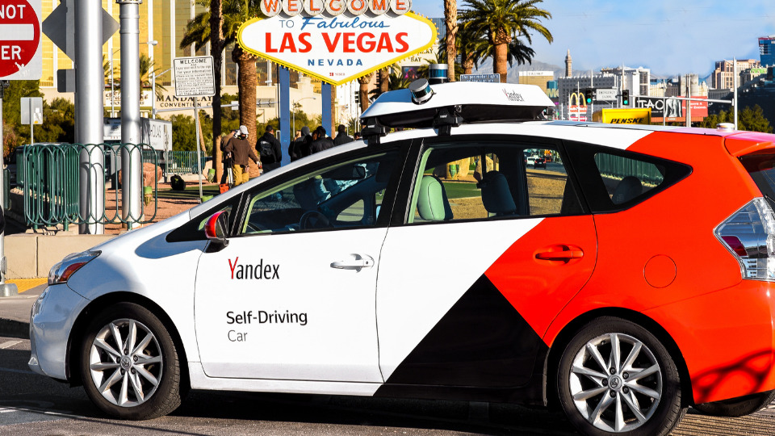
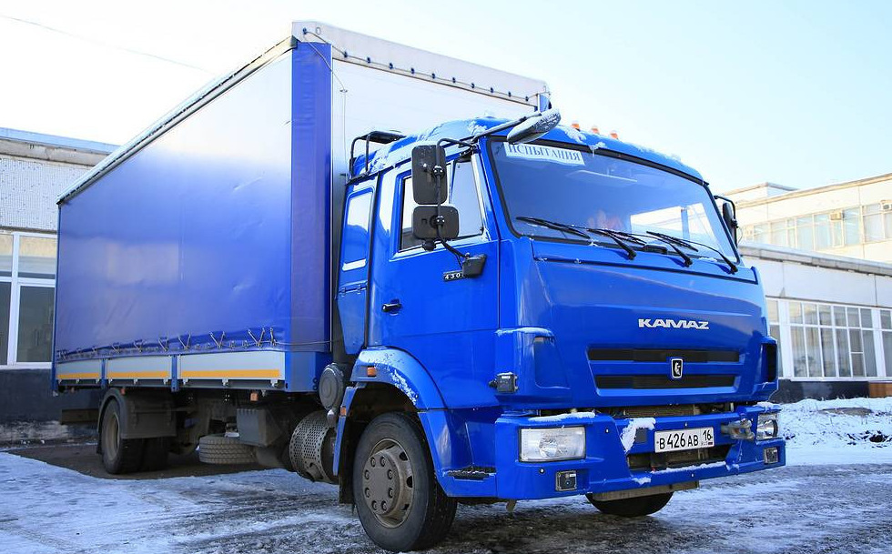
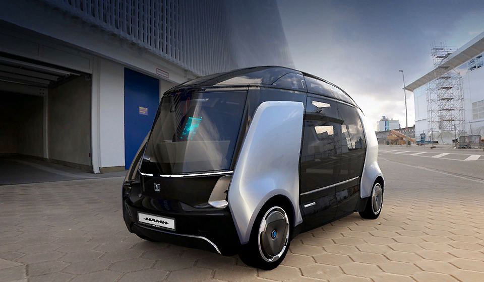

Пожалуй, на текущий момент, это единственный проект который полноценно заработает
в нашей стране в ближайшие годы. Свои беспилотные технологии компания пробовала комбинировать
с современными иномарками. В основном это Toyota Prius и Hyundai Sonata.
Оборудуют их фирменным лидаром — сенсор,
который считывает расстояние до объектов на дороге.

Самый громкий проект компании называется «Одиссей».
Это беспилотник на основе дизельного КАМАЗ-4308. В ней четыре типа сенсоров,
кучу видов связи (Wi-Fi, 4G, радиосвязь).
Есть у них и беспилотный «Челнок» 3373: по сути голый прицеп фуры, без кабины.
К 2025 году фирма планирует пустить беспилотные фуры по международным магистралям.
Перспективы у таких беспилотников в России огромные. Ведь «КАМАЗ» делает
не только классические грузовики. На основе их баз собирают машины экстренных служб и военные.

Пока только концепция, но сами создатели очень верят в ее будущее. Разгоняется до 40 км/час.
Выглядит как из кино про будущее. Разве что не летает.
В салоне могут поместиться 12 пассажиров. Место водителя не предусмотрено в принципе.
Зато авторы говорят, что на базе платформы можно увеличить вместимость
и создать полноценный городской автобус.
